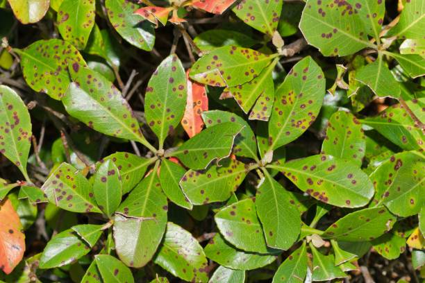
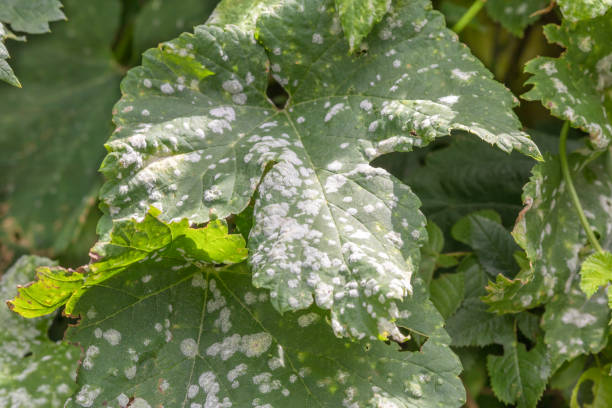
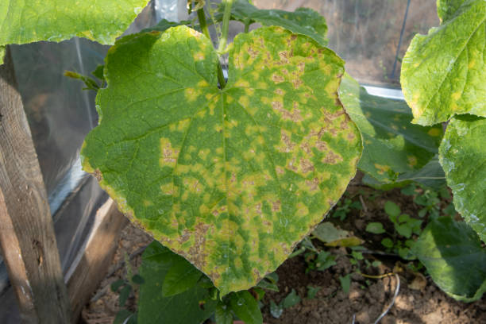
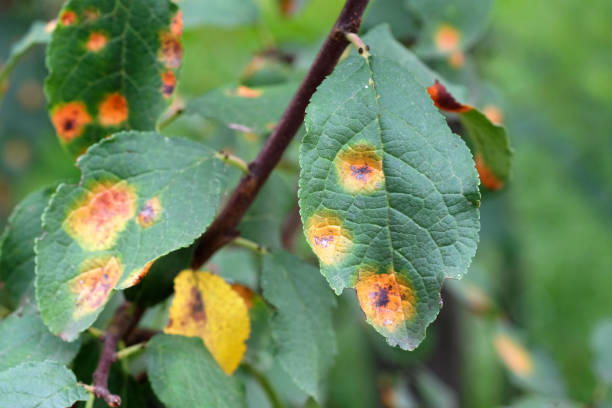
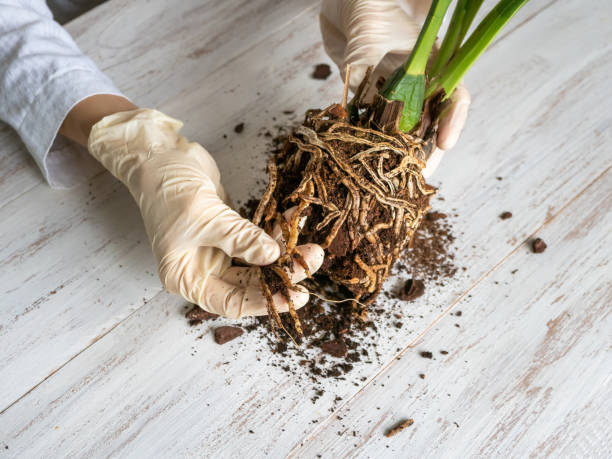
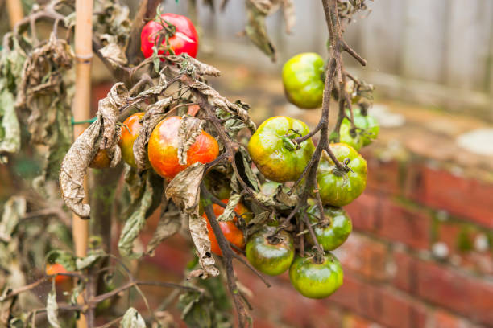
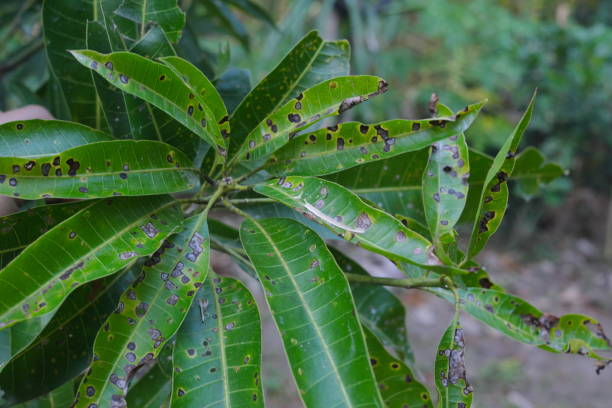
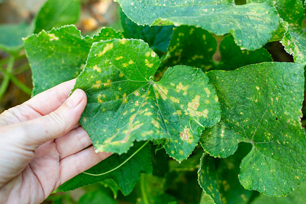

Fungal / Bacterial1. Leaf Spot
A widespread foliage condition characterized by localized dead tissue lesions across leaves of trees, shrubs, and garden crops.

Fungal / BacterialA widespread foliage condition characterized by localized dead tissue lesions across leaves of trees, shrubs, and garden crops.

FungalAn easily recognizable surface infection that coats leaves, stems, and buds in a white or gray flour-like fungal growth.

OomyceteA destructive water-mold infection that affects crops like grapes, cucumbers, and leafy greens during cool, damp weather.

FungalA parasitic fungal infection named for the distinctive rusty, orange-brown spore pustules it forms on plant tissues.

Soilborne FungalA serious soilborne condition where waterlogged roots decay and lose their ability to absorb water and essential nutrients.

BacterialA rapid vascular infection that blocks water transport inside plant stems, causing sudden collapse in tomatoes, potatoes, and cucurbits.

FungalA group of fungal diseases producing dark, sunken lesions on leaves, stems, flowers, and ripening fruits in warm, humid climates.

ViralA systemic viral infection that disrupts chlorophyll production, creating characteristic mottled patterns across plant leaves.
Explore practical, science-backed prevention and management techniques in our next guide.
Explore Prevention Methods